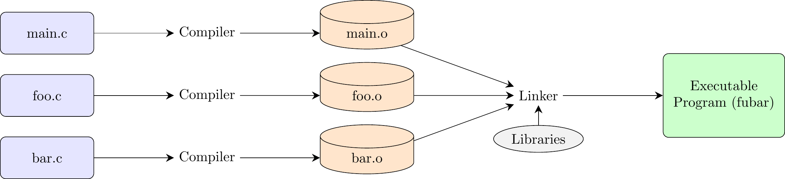
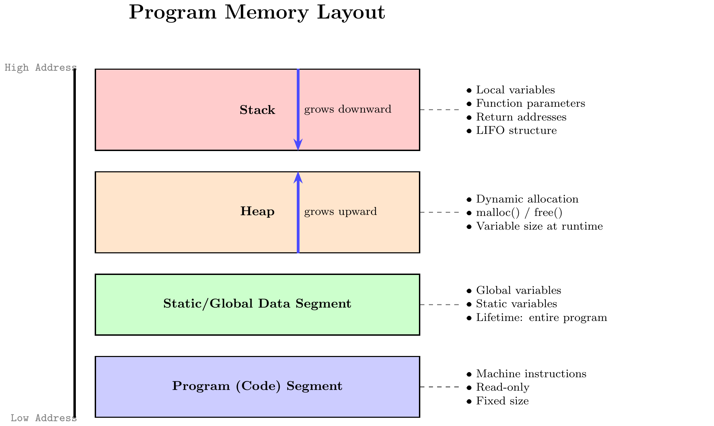

1. Compilation and Memory Management in C
1. Summary
1.1 The C Programming Language
The C programming language, developed by Dennis Ritchie and Brian Kernighan, is a foundational, general-purpose language celebrated for its efficiency and low-level control over system hardware. It is considered a middle-level language, bridging the gap between high-level languages that provide significant abstraction and low-level assembly languages that map directly to machine instructions. This unique position has earned it the nickname “universal assembly language.”
A crucial concept in learning any language is the difference between syntax and semantics.
- Syntax refers to the set of rules that govern the structure and spelling of statements. For example, the rule that a statement must end with a semicolon is syntax.
- Semantics refers to the meaning of those statements—what the computer is instructed to do. While correct syntax is necessary for a program to compile, a deep understanding of semantics is essential for writing correct and efficient programs.
Key characteristics of C include:
- Compiled Language: C source code must be translated by a compiler into machine code before it can be run.
- Statically Typed: Every variable has a specific data type (e.g.,
int,float) that is determined at compile time. However, C is not strongly typed, as it permits many kinds of type conversions. - Procedural: Programs in C are built from procedures, also known as functions, which are blocks of code that perform specific tasks.
- System-Level Access: C allows for direct memory manipulation, giving the programmer the power to “exploit underlying features of the architecture.”
- Unsafe by Design: C trusts the programmer. It does not have built-in protections against common errors like accessing invalid memory locations. This “absence of restrictions” provides great power but also requires careful programming to avoid bugs and security flaws. It’s a best practice to always test code on your own machine to see how it behaves in a real environment.
1.2 Essential Tools & The Compiler
To program in C, you only need two core tools: a text editor to write source code (e.g., VS Code, Notepad++) and a C compiler. An Integrated Development Environment (IDE) is a convenient package that bundles these tools with a debugger and other features, but it is not a requirement.
The most widely used C compiler is GCC (GNU Compiler Collection). Other common compilers include Clang and Microsoft Visual C++ (MSVC). To compile a program from a source file named program.c into an executable named program, you would use the following command in a terminal: gcc -Wall -o program program.c
gcc: Invokes the compiler.-Wall: A critical flag that enables all compiler warnings. Heeding these warnings helps catch potential bugs.-o program: Specifies the name of the output (executable) file.program.c: The input source file.
1.3 The Compilation and Linking Process
A C program can be made of multiple source files (.c files), each known as a translation unit after being processed. Creating an executable from these files involves a multi-stage process:
- Preprocessing: The preprocessor scans the source code for directives (lines beginning with
#). For instance,#include <stdio.h>copies the entire contents of the standard input/output header file into your source file. - Compilation: The compiler translates the preprocessed code into assembly language, a human-readable representation of machine instructions.
- Assembly: The assembler converts the assembly code into pure machine code, creating an object file (with a
.oor.objextension). This file contains the code for its translation unit but is not yet runnable. - Linking: The linker combines all object files into a single executable file. It resolves references between files (e.g., a function call in
main.cto a function defined inutils.c) and incorporates necessary code from system libraries.
1.4 Program Structure and Memory Model
A running C program’s memory is organized into several distinct segments:
- Code Segment: Contains the program’s machine instructions. This area is typically read-only.
- Static/Global Data Segment: Stores global and static variables, which exist for the program’s entire duration.
- Heap: A region for dynamic memory allocation. Data can be allocated on the heap at runtime (e.g., using
malloc()) and must be manually deallocated (usingfree()). The heap grows upwards toward higher memory addresses. - Stack: Manages function calls using a Last-In, First-Out (LIFO) structure. When a function is called, a stack frame is pushed onto the stack. This frame holds the function’s parameters, return address, and local variables. When the function finishes, its frame is popped off. The stack grows downwards toward lower memory addresses.

1.5 Variables, Types, Scope, and Storage Classes
A variable is a named location in memory. More formally, a type defines a set of possible values a variable can hold, a set of operators that can be applied to it, and its relationships with other types.
The scope of a variable determines where in the code it is visible. C uses lexical scope, primarily defined by blocks (code enclosed in {}). A variable declared in an inner block can hide or shadow a variable with the same name from an outer block.
Storage classes are keywords that define a variable’s lifetime (how long it exists) and linkage (its visibility across different files).
auto: The default for local variables. They have a local lifetime (created and destroyed with their block) and are stored on the stack.static:- Local Static Variable: Has a static lifetime (exists for the whole program) but local scope (only visible inside its function). It is initialized only once and retains its value between function calls.
- Global Static Variable: Has a static lifetime and internal linkage, meaning it is only visible within the single file where it is declared.
extern: A declaration that tells the compiler a global variable exists but is defined in another file. It is used to share variables across translation units. A standard global variable (withoutstatic) has external linkage by default.
1.6 Debugging
A debugger is a tool that allows you to run a program in a controlled manner to find and fix errors (bugs). It lets you pause execution, inspect the values of variables, and step through the code line by line. GDB (the GNU Debugger) is a powerful, command-line debugger for C.
To prepare a program for debugging, you must compile it with the -g flag, which includes debugging information in the executable: gcc -g -Wall -o program program.c
Common GDB commands include:
run(orr): Starts running your program.break <line_number>(orb): Sets a breakpoint, which pauses execution when it reaches that line.next(orn): Executes the current line and moves to the next line in the same function. It steps over function calls.step(ors): Executes the current line. If the line contains a function call, it steps into that function.print <variable>(orp): Displays the current value of a variable.continue(orc): Resumes execution until the next breakpoint or the end of the program.quit(orq): Exits GDB.
2. Definitions
- Compiler: A program that translates source code from a high-level language into low-level machine code.
- Linker: A program that combines object files and libraries into a single executable file.
- Debugger: A tool used to execute a program in a controlled way to find and diagnose errors.
- Source File: A text file (
.c) containing human-readable programming instructions. - Object File: A file (
.o) containing machine code from a single source file; it is an intermediate step before linking. - Executable File: A file containing a complete machine code program that can be run by the operating system.
- Translation Unit: A source file after the preprocessor has processed it; the basic unit of compilation.
- Stack: A LIFO memory region for function calls, storing local variables, parameters, and return addresses.
- Stack Frame: A block of memory on the stack created for a single function call.
- Heap: A memory region for dynamic allocation, managed manually by the programmer.
- Syntax vs. Semantics: Syntax is the grammatical structure of code; Semantics is its meaning and behavior.
- Scope: The region of code where a variable is visible and accessible.
- Lifetime: The duration for which a variable exists in memory.
- Linkage: The extent to which a variable or function can be shared across different files (translation units).
4. Mistakes
- Forgetting Semicolons (
;): Every statement in C must end with a semicolon. Why it’s wrong: The semicolon is the statement terminator. Omitting it is a syntax error that prevents compilation. - Using Assignment (
=) Instead of Comparison (==): In a condition likeif (x = 5), the value5is assigned tox, and the expression itself evaluates to5(true), leading to incorrect logic. Why it’s wrong: The assignment operator changes a variable’s value, whereas the equality operator==is required to test if two values are the same. - Integer Division Truncation: Dividing two integers results in an integer, with any fractional part discarded (e.g.,
9 / 4is2). Why it’s wrong: This causes a loss of precision and leads to incorrect results in mathematical calculations that require floating-point accuracy. - Ignoring Compiler Warnings: Treating warnings as non-critical and ignoring them. Why it’s wrong: Warnings often flag legally-valid code that is logically flawed or relies on undefined behavior (e.g., using an uninitialized variable). They are frequently indicators of hidden bugs.
- Forgetting to Include Header Files: Using library functions like
printfwithout#include <stdio.h>. Why it’s wrong: Header files provide function declarations, which tell the compiler the function’s signature (name, parameters, return type). Without this, the compiler cannot verify the function call and will issue an error. - Accessing an Array Out of Bounds: Accessing an element outside the defined range of an array, such as
arr[10]in an array declared asint arr[10](valid indices are 0 through 9). Why it’s wrong: C does not perform bounds checking. This action reads from or writes to an arbitrary memory location, leading to undefined behavior that can corrupt data or crash the program.
5. Examples
5.1. Basic “Hello, World!” Program
Question: Write, compile, and describe the output of a standard “Hello, World!” program in C.
Click to see the solution
Write the C code and save it in a file named
hello.c. The#include <stdio.h>directive includes the standard library for input/output functions likeprintf. Themainfunction is the mandatory entry point for execution.#include <stdio.h> int main() { printf("Hello, World!\n"); return 0; // Indicates successful execution }Compile the code using GCC, enabling warnings and specifying the output file name.
sh gcc -Wall -o hello hello.cRun the executable from the terminal.
sh ./hello
Hello, World!
5.2. Variable Declaration and Arithmetic
Question: Write a C program that declares two integer variables, a and b, initializes them to 12 and 5, and then prints their sum, difference, product, and quotient.
Click to see the solution
Include the standard I/O header for the
printffunction.Define the
mainfunction.Declare and initialize two
intvariables.Use
printffor each operation. The%dformat specifier acts as a placeholder for an integer value. The\ncharacter adds a newline for readability.#include <stdio.h> int main() { int a = 12; int b = 5; printf("Sum: %d\n", a + b); printf("Difference: %d\n", a - b); printf("Product: %d\n", a * b); printf("Quotient (Integer): %d\n", a / b); // Note: Integer division return 0; }
Answer: The output of the program will be:
Sum: 17
Difference: 7
Product: 60
Quotient (Integer): 25.3. Integer vs. Floating-Point Division
Question: Write a program to show the difference between integer division and floating-point division using the numbers 9 and 4.
Click to see the solution
Perform integer division. Both operands are integers, so the result is truncated.
Perform floating-point division. To trigger this, at least one of the operands must be a floating-point type. We can achieve this by writing
9.0or by casting one of the integer variables to afloat:(float)int_a.Print both results using the correct format specifiers:
%dfor the integer result and%ffor the float result.#include <stdio.h> int main() { int int_a = 9; int int_b = 4; // Case 1: Integer division int int_result = int_a / int_b; printf("Integer Division (9 / 4): %d\n", int_result); // Case 2: Floating-point division float float_result = (float)int_a / int_b; printf("Floating-Point Division ((float)9 / 4): %f\n", float_result); return 0; }
Answer: The program’s output clearly shows the truncation:
Integer Division (9 / 4): 2
Floating-Point Division ((float)9 / 4): 2.2500005.4. Scope and Variable Shadowing
Question: Predict the output of the following C code and explain the reasoning based on variable scope.
#include <stdio.h>
int main() {
int value = 100; // Outer 'value'
printf("1. At outer level, value is: %d\n", value);
{ // Start of a new inner block
int value = 200; // Inner 'value', shadows the outer one
printf("2. Inside inner block, value is: %d\n", value);
} // Inner block ends, inner 'value' is destroyed
printf("3. Back at outer level, value is: %d\n", value);
return 0;
}Click to see the solution
- First
printf: This line is in the scope of the outermainblock. It accesses the variablevaluedeclared in this scope, which is100. - Second
printf: This line is inside an inner block. A new, separate variable also namedvalueis declared here and initialized to200. Within this block, this inner variable shadows the outer one. Any reference tovaluehere refers to the inner variable, so200is printed. - End of Inner Block: When the closing brace
}is reached, the inner block’s scope ends. All variables declared within it, including the innervalue, are destroyed and cease to exist. - Third
printf: Execution is now back in the outermainblock’s scope. The onlyvaluevisible here is the original one, which was never modified. Its value is still100.
Answer: The output will be:
1. At outer level, value is: 100
2. Inside inner block, value is: 200
3. Back at outer level, value is: 1005.5. Using static to Retain State in a Function
Question: Create a function that counts how many times it has been called. Use a static local variable for the counter. Demonstrate its behavior by calling it multiple times from main.
Click to see the solution
Define a function
count_calls.Inside it, declare
static int counter = 0;. Thestatickeyword ensures thatcounteris initialized to0only once, when the program starts. Its value will be preserved across function calls.Increment and print
counter.In
main, call the function in a loop to see the counter increase.#include <stdio.h> void count_calls() { // This variable is initialized only once and retains its value. static int counter = 0; counter++; printf("Function has been called %d time(s).\n", counter); } int main() { printf("Calling the function...\n"); count_calls(); count_calls(); count_calls(); return 0; }
Answer: The output shows that the counter’s state persists between calls:
Calling the function...
Function has been called 1 time(s).
Function has been called 2 time(s).
Function has been called 3 time(s).5.6. Simple while Loop
Question: Write a C program that uses a while loop to print the numbers from 5 down to 1.
Click to see the solution
Include
stdio.h.In
main, declare an integer counter variable and initialize it to5.Create a
whileloop with the condition that the counter must be greater than0.Inside the loop, print the counter’s current value.
Decrement the counter (
counter--). This step is essential to prevent an infinite loop.#include <stdio.h> int main() { int counter = 5; // Initialize counter while (counter > 0) { printf("%d\n", counter); counter--; // Decrement counter to move toward the exit condition } return 0; }
Answer: The program will produce the following output:
5
4
3
2
15.7. Basic Debugging with GDB
Question: The following program is supposed to calculate the sum of integers from 1 to 3, but it contains a bug. Explain how to use GDB to find it.
// File: sum_bug.c
#include <stdio.h>
int main() {
int sum = 0;
int i;
for (i = 1; i < 3; i++) { // Bug is here!
sum = sum + i;
}
printf("Sum is: %d\n", sum); // Expected: 6, Actual: 3
return 0;
}Click to see the solution
- Compile with Debug Symbols: First, compile the program with the
-gflag to include information GDB needs.sh gcc -g -o sum_bug sum_bug.c - Start GDB: Launch GDB with the executable file as an argument.
sh gdb ./sum_bug - Set a Breakpoint: The interesting logic is inside the loop. Let’s set a breakpoint at the line where the sum is calculated (line 7) to watch how
sumchanges.gdb (gdb) break 7 - Run the Program: Start the program inside GDB. It will run until it hits our breakpoint.
gdb (gdb) run - Inspect Variables: The program is now paused at line 7. Let’s check the values of
iandsum.gdb (gdb) print i $1 = 1 (gdb) print sum $2 = 0 - Continue Execution: Let the loop run one more time.
gdb (gdb) continueThe program stops at the breakpoint again. Let’s inspect the variables now.gdb (gdb) print i $3 = 2 (gdb) print sum $4 = 1 - Continue Again:
gdb (gdb) continueThis time, the program finishes and prints “Sum is: 3”. It never stopped at the breakpoint fori = 3. - Identify the Bug: By stepping through the loop, we saw it execute for
i = 1andi = 2, but it terminated beforei = 3. The bug is in the loop conditioni < 3. To include the number 3 in the sum, the condition must bei <= 3.
i < 3. The fix is to change it to i <= 3.